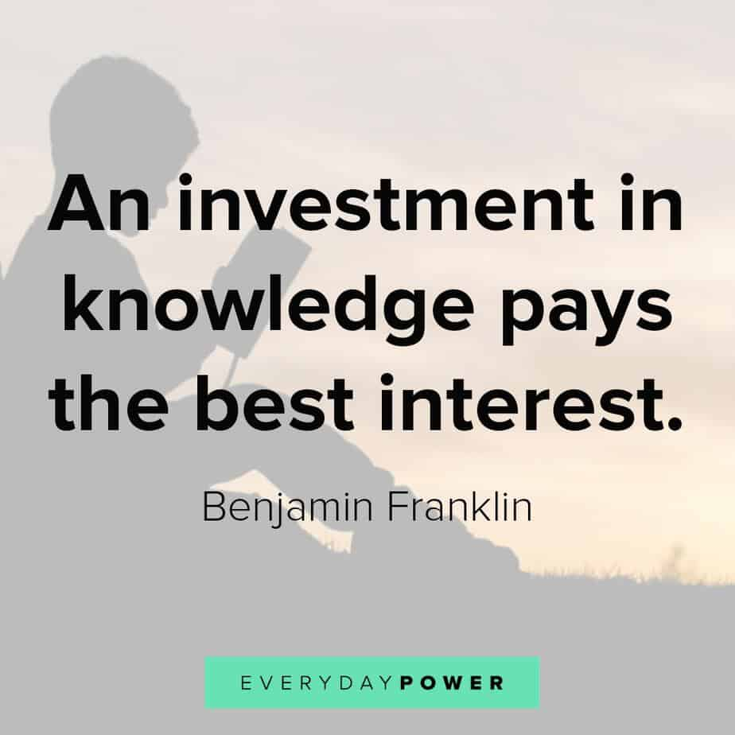
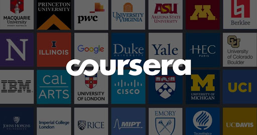

The above quote by "Benjamin Franklen" suggest that learning is important. It can change the shape of your life if you spend your time learning something that is demandable or something that pertains to your passion.
The guy in the above video is David Malan. He teaches CS50x online which you can access through EDX or by clicking "here" . You can get the same knowledge that is being offered to the students at harvard university without even paying a single rupee. This course can teach you several coding languages like Python, C programming, Scratch etc. They don't only offer free education but also give you a certificate on completion entirely for free. There are other courses too on EDX which you can take to enhance your knowledge.

Coursera is a world-wide online learning platform founded in 2012 by Stanford computer science professors Andrew Ng and Daphne Koller that offers massive open online courses (MOOC), specializations, and degrees. You can audit courses for free and gain the knowledge or if you want to earn a certificate but don't have enough money to buy it. You can apply for financial aid and get the certificate for free upon completion of a course. You can explore the courses offered by Coursera by clicking "here".
Udemy, founded in May 2010, is an American online learning platform aimed at professional adults and students. It offers some of the courses for free others being paid-courses. You can get 100% off some paid courses through coupons from "Coupons Scorpion". Visit Udemy by clicking "here."